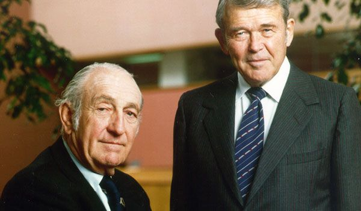

HP Inc. is an American multinational information technology company headquartered in Palo Alto, California, that develops personal computers (PCs), printers and related supplies, as well as 3D printing services.
Bill Hewlett and David Packard graduated with degrees in electrical engineering from Stanford University in 1935. The company started in a garage in Palo Alto during a fellowship they had with past professor Frederick Terman at Stanford during the Great Depression, whom they considered a mentor in forming the company.[11] In 1938, Packard and Hewlett began part-time work in a rented garage with an initial capital investment of US$538 (equivalent to $11,645 in 2023). In 1939, Hewlett and Packard decided to formalize their partnership. They tossed a coin to decide whether the company they founded would be called Hewlett-Packard (HP) or Packard-Hewlett.

Hewlett-Packerd
HISTORY....!!!
HP was founded by Bill Hewlett and Dave Packard in 1939. Their first product was an audio oscillator and one of their first customers Walt Disney. Disney used the oscillator to test audio equipment in the 12 specially equipped theaters showing Fantasia in 1940.
First Computer
HP 2116
Hewlett-Packard's first computer, the HP 2116, was introduced in 1966. It was developed as a controller, a logical step given the company's focus on instruments and measurement devices, but it was so versatile and inexpensive that many customers bought one for use as a standalone computer.
Logo History
Hewlett-Packard (HP) Company's Co-founders Bill Hewlett and David Packard tossed a coin to decide whether the company they founded would be called Hewlett-Packard or Packard-Hewlett. Hewlett won the toss and the tech giant was named Hewlett-Packard


 HP 2116
HP 2116